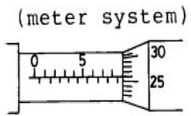

사출(프레스)금형산업기사 (2005-03-06 기출문제)
1과목: 금형설계
1. 투영면적이 큰 것, 또는 성형품의 측면에 게이트를 붙일수 없을 때 사용되며, 비교적 변형이 적은 성형품을 만들수 있는 게이트는?
- 팬 게이트
- 디스크 게이트
- 핀 포인트 게이트
- 태브 게이트
(정답률: 84%)

2. 일반적으로 사출금형의 강도계산시 사용되는 수지의 압력은?
- 100 - 300kgf/cm2
- 300 - 500kgf/cm2
- 500 - 700kgf/cm2
- 700 - 900kgf/cm2
(정답률: 30%)
3. 폴리에틸렌(PE) 수지의 성형시 금형온도로 적절한 것은?
- 40 - 60℃
- 80 - 100℃
- 100 - 120℃
- 140 - 160℃
(정답률: 28%)
4. 분할캐비티의 운동량이 10mm이고, 앵귤러 핀의 경사 각도가 10°일 때 앵귤러 핀의 작용 길이는 약 얼마인가? (단, 틈새는 0.2mm이다.)
- 46.55mm
- 56.42mm
- 58.45mm
- 48.42mm
(정답률: 48%)
5. 공기 이젝팅 방법의 설명 중 틀린 것은?
- 두께가 두꺼운 제품에 적용한다.
- 밀핀의 자국이 나지않는다.
- 구조가 간단하며 비용도 싸다.
- 공기압은 5∼6㎏/cm2을 보낸다.
(정답률: 58%)
6. 사출용적이 112cm3이고 용융수지의 밀도가 1.⑤(g/cm3)인 사출기의 사출량은 얼마인가? (단, 사출효율은 85%이다.)
- 약 91(g)
- 약 100(g)
- 약 118(g)
- 약 138(g)
(정답률: 53%)
7. 투명제품에 기포가 발생하는 경우 이것을 없애는 방법으로 잘못 된 것은?
- 게이트, 러너를 작게한다.
- 사출압력을 높인다.
- 수지는 성형전에 예비 건조한다.
- 급격한 살두께 변화를 줄인다.
(정답률: 48%)
8. 금형에 있어 성형품에 해당하는 공간부분을 무엇이라고 말하는가?
- 캐비티(cavity)
- 인서트(insert)
- 코어핀(core pin)
- 랜드(land)
(정답률: 85%)
9. 러너리스금형에 사용할 수 없는 수지는?
- 나이론
- 폴리스티렌
- 폴리프로필렌
- ABS
(정답률: 75%)
10. 금형 캐비티 내의 평균압력이 300kg/cm2이고, 캐비티의 투영면적이 100cm2 이라면 이때 형체력은 얼마인가?
- 10 ton
- 20 ton
- 30 ton
- 40 ton
(정답률: 89%)
11. 굽힘 반경이 판두께에 비하여 아주 작은 굽힘가공을 할 때 균열을 방지하기 위하여 판재의 압연방향과 굽힘선은 어떠한 방향으로 하는 것이 가장 좋은가?
- 같은 방향
- 30°방향
- 60°방향
- 90°방향
(정답률: 60%)
12. 다음 중 복합금형(compound die)에 대한 설명으로 틀린 것은?
- 순차이송금형에 비하여 재료 사용면에서 우수하다.
- 제품의 내외 윤곽의 버(burr)가 동일 방향에 있다.
- 순차이송금형에 비하여 제품의 정도가 높다.
- 순차이송금형에 비하여 금형구조가 간단하다.
(정답률: 79%)
13. 프로그레시브 금형(progressive die)에서 파일럿 핀을 사용하는 목적 중 가장 적당한 것은?
- 소재를 눌러주기 위해서
- 가공한 스크랩을 떨어버리기 위해서
- 소재의 이송피치를 정확히 맞추어주기 위하여
- 재료가 넓을 때 움직이지 않도록하기 위해서
(정답률: 90%)
14. 지름이 60mm인 원통컵을 지름이 100mm의 블랭크로 1회에 드로잉 할 때 필요한 드로잉률은?
- 0.4
- 0.6
- 0.7
- 1.7
(정답률: 93%)
15. 일반적으로 시판되는 펀치의 표준적인 고정방법으로 호환성이 좋은 방법은 다음 중 어느 것인가?
- 나사 고정 방식
- 녹핀 고정 방식
- 콜러 고정 방식
- 데브콘 고정 방식
(정답률: 8%)
16. 트랜스퍼 금형의 가공공정 설정시 유의할 사항이 아닌 것은?
- 프레스 스트로크가 충분한가
- 재료의 중간 풀림 공정 설정
- 가공 제품의 적절한 위치결정
- 최후에 가공레이 아웃은 무리가 없는가
(정답률: 61%)
17. 원통형, 각통형, 반구형 등 밑이 있고 이음새가 없는 용기 가공을 하는 것은?
- 커얼링
- 드로잉
- 블랭킹
- 네킹
(정답률: 73%)
18. 스트립 소재(두께 1mm)의 가장자리를 폭 10mm, 깊이 2mm로 노칭하고자 할 때의 노칭 다이치수는? (단, 틈새는 두께의 10%로 설계한다,)
- 9.8mm
- 10mm
- 10.1mm
- 10.2mm
(정답률: 22%)
19. 전단가공에서 펀치의 진행방향과 다이구멍내의 직각방향에 발생하는 저항력을 무엇이라 하는가?
- 전단력
- 블랭크 홀딩력
- 측방력
- 쿠션력
(정답률: 29%)
20. 다음 중 인력프레스에 해당되는 것은?
- 크랭크 프레스
- 편심 프레스
- 마찰 프레스
- 유압 프레스
(정답률: 38%)
2과목: 기계가공법 및 안전관리
21. 금형용 탄소강 재료를 플레인 밀링 커터로 회전수 30 rpm으로 가공할 때 이송량은 몇 mm/min 인가? (단, 커터잇수 12개, 한날당 이송길이는 0.25mm이다.)
- 30
- 36
- 75
- 90
(정답률: 38%)
22. 테이퍼 구멍을 가진 다이에 재료를 통과시켜 다이 구멍의 최소 단면치수로 가공하는 방법은?
- 압연
- 인발
- 단조
- 전조
(정답률: 42%)
23. 블랭킹용 프레스 금형가공 기계중 다이와 펀치가공에 주로 사용되는 공작기계는?
- 머시닝 센터
- 프로파일 연삭기
- NC 선반
- 와이어컷 방전가공기
(정답률: 77%)
24. 아래 그림은 대표적인 외측 마이크로미터로써 0~25mm를 측정하는 것이다. 눈금이 나타내는 측정값은?

- 8.26mm
- 8.34mm
- 8.525mm
- 8.76mm
(정답률: 77%)
25. 구멍의 키이홈 가공에 가장 적당한 공작 기계는?
- 브로칭 머신
- 연삭기
- 호빙 머신
- 호닝
(정답률: 80%)
26. 모(毛), 직물 등으로 만든 원반을 여러장 붙인 바퀴에 미세한 연삭입자를 사용하여 공작물의 표면을 광택내는 작업은?
- 호닝
- 버핑
- 폴리싱
- 슈퍼피니싱
(정답률: 59%)
27. 관통되지 않고 바닥이 있는 용기형 가공 금형이 아닌 것은?
- 다이 캐스팅 금형(die casting mould)
- 플라스틱 금형(Plastic mould)
- 유리 금형(glass forming mould)
- 피어싱 금형(piercing die)
(정답률: 69%)
28. 평 볼트, 소형나사 머리부를 가공물의 몸체 내에 들어가게 하기 위해 구멍의 상부를 원통으로 깎아 내는 드릴작업은?
- 보링
- 스폿 페이싱
- 카운터 보링
- 카운터 싱킹
(정답률: 84%)
29. 금형에 표면처리를 하는 목적으로 옳지 않은 것은?
- 수명과 생산성 향상
- 내열성 및 마찰증가
- 금형의 강도 증가
- 방식 및 방청
(정답률: 59%)
30. 방전가공용 전극의 구비 조건으로 맞지 않는 것은?
- 가공전극의 소모가 적을 것
- 방전이 안전하고 가공속도가 클 것
- 구하기 쉽고 고가품일 것
- 기계가공이 쉬울 것
(정답률: 90%)
31. 금속절삭시 다음의 칩형태 중에서 공구가 받는 절삭저항은 거의 일정하게 유지되며, 따라서 진동이 적게 일어나게 되어 가장 양호한 가공표면을 얻을 수 있는 칩의 형태는?
- 균열형(Crack Type)칩
- 뜯기형(Tear Type)칩
- 전단형(Shear Type)칩
- 유동형(Flow Type)칩
(정답률: 73%)
32. 아베의 원리에 맞는 구조를 갖는 것은?
- 하이트 게이지
- 외측 마이크로미터
- 캘리퍼형 내측 마이크로미터
- 버니어 캘리퍼스
(정답률: 64%)
33. 여러대의 공작기계를 1대의 컴퓨터에 결합시켜 제어하는 시스템은?
- CNC
- DNC
- FMS
- FA
(정답률: 88%)
34. 치공구에서 비대칭 부품을 고정구에 장착할 때 부품의 올바른 위치를 쉽게 찾아내어 신속하게 장착시키기 위한 보조장치는?
- 이젝터
- 중심위치 결정장치
- 클램프장치
- 풀 프루핑장치
(정답률: 46%)
35. 방전 가공액의 종류가 아닌 것은?
- 물
- 방전가공유
- 탈이온수
- 소금물
(정답률: 62%)
36. 다음 가공 중 몰드(mould)금형의 가공법이 아닌 것은?
- 인베스트먼트
- 로스트왁스
- 발포성형
- 포징 롤
(정답률: 30%)
37. 지름 10mm의 드릴로 절삭속도 12m/min의 속도를 얻으려면 드릴머신의 주축 회전수는 몇 회전으로 하여야 하는가?
- 330 rpm
- 383 rpm
- 402 rpm
- 532 rpm
(정답률: 92%)
38. 다음중 금형의 표면을 극히 소량씩 깎아내어 정확한 평면으로 다듬질하여 두면을 형합하는 작업은?
- 태핑
- 호닝
- 스크래핑
- 선반
(정답률: 74%)
39. 방전가공 작업의 안전수칙 중 올바르지 않는 것은?
- 화재의 위험이 없으므로 장기간 무인운전을 할 수 있다.
- 가공액 높이를 공작물 윗면보다 50 mm정도 높게 충분히 채운다.
- 가공조건은 정확한 값을 선정하여야 한다.
- 가공액의 색깔이 변했을 때는 지체없이 필터를 교환한다.
(정답률: 72%)
40. 다음은 레이저가공의 특징에 관한 사항이다. 관련이 없는 것은?
- 공작물의 국부순간 가열로 열변형 등이 생기지 않는다.
- 대기, 진공, 절연가스 속에서도 가공이 가능하다.
- 공작물에 공구가 접촉치 않고 가공되므로 공작물의 손상이나 공구의 마모가 없다.
- 가공재료는 금속재료에 한하며 경도에 관계없이 가공이 가능하다.
(정답률: 66%)
3과목: 금형재료 및 정밀계측
41. 담금질 조직 중 가장 경도가 높은 것은?
- 펄라이트
- 마텐자이트
- 솔바이트
- 트루스타이트
(정답률: 81%)
42. 비중이 1.74로서 실용 금속재료 중 가장 가벼워 항공기, 그밖의 가벼운 것을 필요로하는 구조용 재료로서 쓰이는 것은?
- Al
- Mg
- Si
- Ni
(정답률: 68%)
43. 시효 변형이 일어날 가능성이 있는 금형에 가장 적당한 열처리 방법은?
- 담금질
- 뜨임
- 서브제로처리
- 침탄
(정답률: 39%)
44. 고탄성을 요구하는 스프링 재료와 내식성, 내마모성이 좋아 펌프부품 및 화학기계 부품으로 사용되는 청동은?
- 인 청동
- 납 청동
- 알루미늄 청동
- 규소 청동
(정답률: 32%)
45. 가공용 알루미늄 합금중 내식용의 대표적인 것은?
- 인코넬
- Y-합금
- 하이드로날륨
- 라우탈
(정답률: 20%)
46. 플라스틱 금형재료에 일반적으로 첨가되는 원소는?
- W-V
- V-Cr
- Ti-Mo
- Cr-Mo
(정답률: 54%)
47. 열간용 금형재료(압출, 다이캐스팅, 단조 업세팅)의 구비조건 중 올바르지 못한 것은?
- 내마모, 내열성이 양호하여야 한다
- 열처리 변형율이 작아야 한다
- 열 전도율이 작아야 한다
- 내충격성이 높아야 한다
(정답률: 74%)
48. 사출금형에서 캐비티 부분의 내식성을 중요시 해야하는 성형재료는?
- 폴리프로필렌
- 염화비닐 수지
- 폴리에틸렌
- ABS 수지
(정답률: 22%)
49. 탄소강에서 인(P)에 의한 영향은 무엇인가?
- 망간과 결합하여 절삭성을 좋게한다.
- 헤어크랙의 원인이 된다.
- 부식저항성을 증가시킨다.
- 상온취성의 원인이 된다.
(정답률: 63%)
50. 성형이 어려운 텅스텐 등과 같은 고온용 신소재의 소결법으로 적절한 것은?
- 분말야금법
- 주조법
- 용접법
- 압연법
(정답률: 71%)
51. 본척의 최소 눈금이 0.5mm, 부척의 눈금이 본척 12mm 를 25등분한 버니어 캘리퍼스는 몇 mm까지 읽을수 있는가?
- 0.5 mm
- 0.2 mm
- 0.01 mm
- 0.02 mm
(정답률: 58%)
52. 20℃에서 길이가 200mm인 부품이 30℃ 일 때 얼마나 팽창하겠는가? (단, 재질은 강철이고, 선팽창계수는 24 ×10-6/℃ 이다).
- 18 ㎛
- 24 ㎛
- 38 ㎛
- 48 ㎛
(정답률: 48%)
53. 각도 측정기가 아닌 것은?
- 사인 바(sine bar)
- 콤비네이션 셋트(combination set)
- 센터 게이지(center gage)
- 거칠기 게이지(roughness gage)
(정답률: 80%)
54. 공구 현미경의 부속품 중 작은구멍의 중심사이 거리 측정에 가장 적합한 것은?
- 이중상 접안경
- 필러식 현미경
- 각도 접안렌즈
- 형판 접안렌즈
(정답률: 74%)
55. 진직도를 측정하기 위한 측정기가 아닌 것은?
- 정밀 수준기
- 스트레이트 에지
- 서큘러 테이블
- 오토콜리메이터
(정답률: 23%)
56. 헐거운 끼워맞춤에서 구멍의 최소허용치수와 축의 최대허용치수와의 차를 무엇이라 하는가?
- 최소틈새
- 최대틈새
- 최소죔새
- 최대죔새
(정답률: 69%)
57. 나사 마이크로미터는 나사의 어느부분 측정에 주로 사용하는가?
- 유효 지름
- 피치
- 바깥 지름
- 축지름
(정답률: 85%)
58. 마이크로미터의 보관 방법 중 잘못된 것은?
- 앤빌과 스핀들면은 잘 밀착시켜 보관한다.
- 진동이나 직사광선을 피한다.
- 방청유를 바르고 나사부는 양질의 기름을 바른다.
- 사용후 측정면을 잘 닦은후 보관한다.
(정답률: 79%)
59. 마이크로미터의 스핀들 피치는 0.5 mm이고 딤블의 원주를 100등분 하였다면 최소 눈금(mm)은?
- 0.⑤
- 0.0⑤
- 0.01
- 0.001
(정답률: 86%)
60. 비교 측정의 특징 설명으로 틀린 것은?
- 자동화가 가능하다.
- 치수 계산이 생략된다.
- 기준 치수의 표준게이지가 필요없다.
- 길이 뿐 아니라 공작기계의 정밀도 검사 등에도 이용된다.
(정답률: 58%)